I took this trip in 2012, so more than 10 years ago. I was living in São Paulo, Brazil and went backpacking from Cordoba, Argentina through the north of the country all the way to Bolivia, crossing the Uyuni desert with an organised trip all the way to the Atacama desert in Chile. From there I took the bus to Santiago and crossed to Mendoza, finishing back in Cordoba where I took the plane back home. Here I will focus on one of the best parts of that long road trip: Salar de Uyuni. There is also an airplane close to the salt desert for the ones short on time or willing to fly there, it is the International Airport A Joya Andina. I had time and took it slow, arriving by bus from Argentina and then scheduling a three-day trip with a local agency.
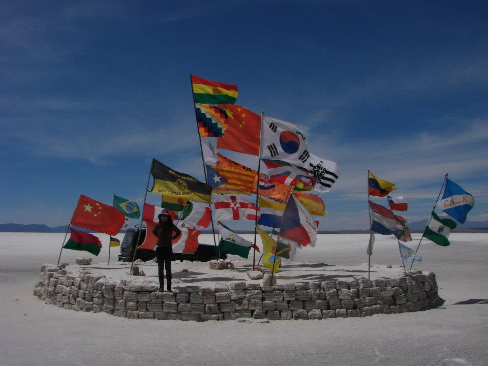 You can't skip a foto with those flags here in the Salt DesertThere are many agencies that offer these itinerary and I honestly do not remember the name of mine (it was so long ago!) but you can find many option online, for example this one which offers different tours adapted to your taste and how much time you have available. I recommend at least 3 full days to enjoy the most. Normally I am the type of traveller who likes to explore on its own, without organised tours, but I would not recommend that in this inhospitable region.
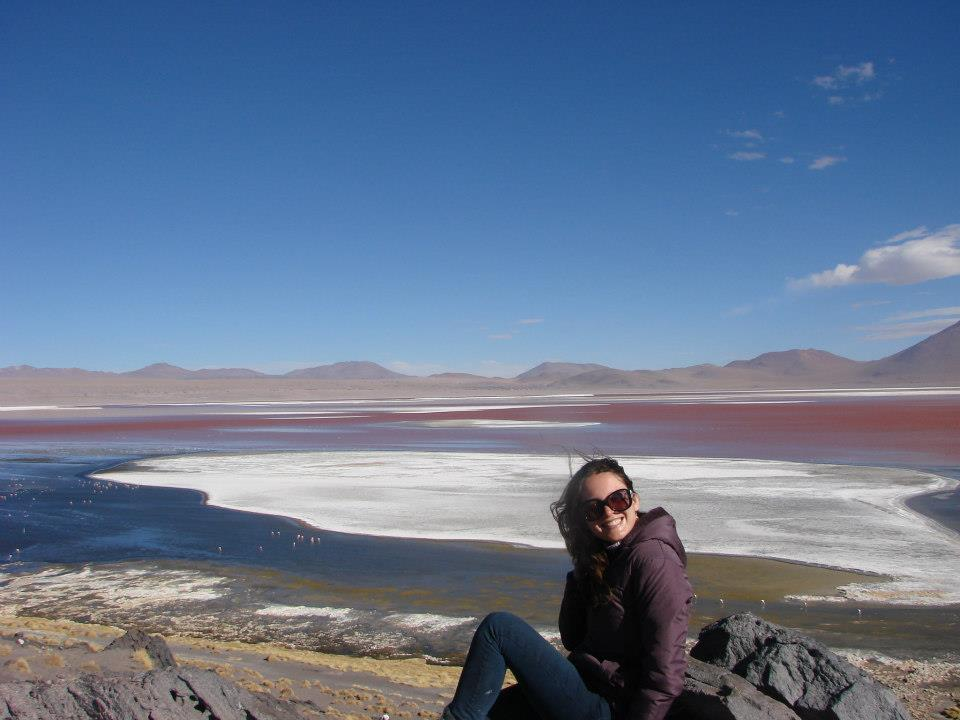 Colors the eye has never seenI took the Toyota Tour that included the Coloured Lagoon, Green Lagoon, volcanoes, deserts, & transfer to San Pedro (Chile). It is great to have a driver who is also a cook and takes us though the desert of salt knowing exactly where to stop and where to go, otherwise most people would simply get lost - there are no streets, not really any point of reference. All you see is an immense white landscape. In the beginning it looks like snow until the eye gets used to it and the brain reminds you: this is actually salt! Temperatures can get very low at night so bring warm clothes. During the day we had sunny, dry days but not too hot (it was fall, I cannot say much about other times of the year) .
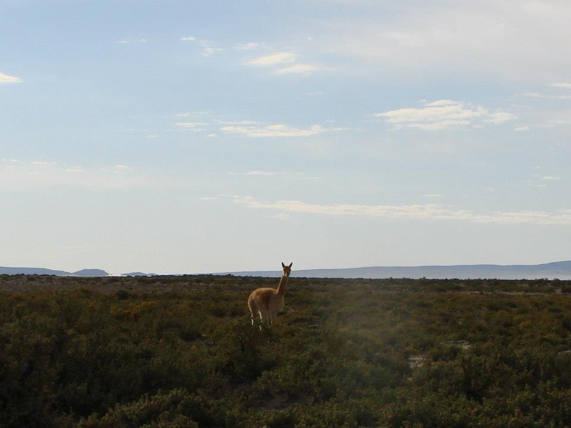 Hello there my Alpaca friend!At one moment you are crossing this immense white mass of nothing and the next something surreal appears right in front of you. For example a Train Cemetery. Until then I didn't know such a thing exists. It's a very unique place with many abandoned trains and locomotives from the nineteenth and early 20th century where we can just hop in and take pictures. It feels a bit like being inside an old movie set.
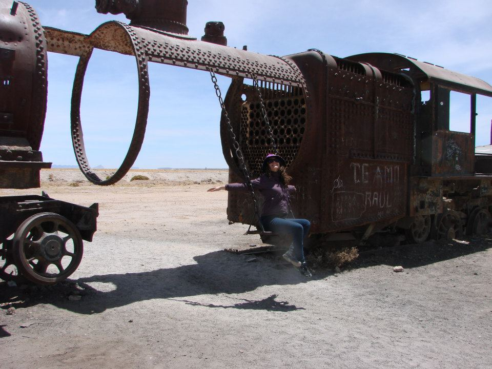 Have you ever been to a train cemetery??The second stop on the first day was much more impressive though: the Incawasi Island ( Inca house Island). It is located in the centre of the salar at 100 km from Uyuni. 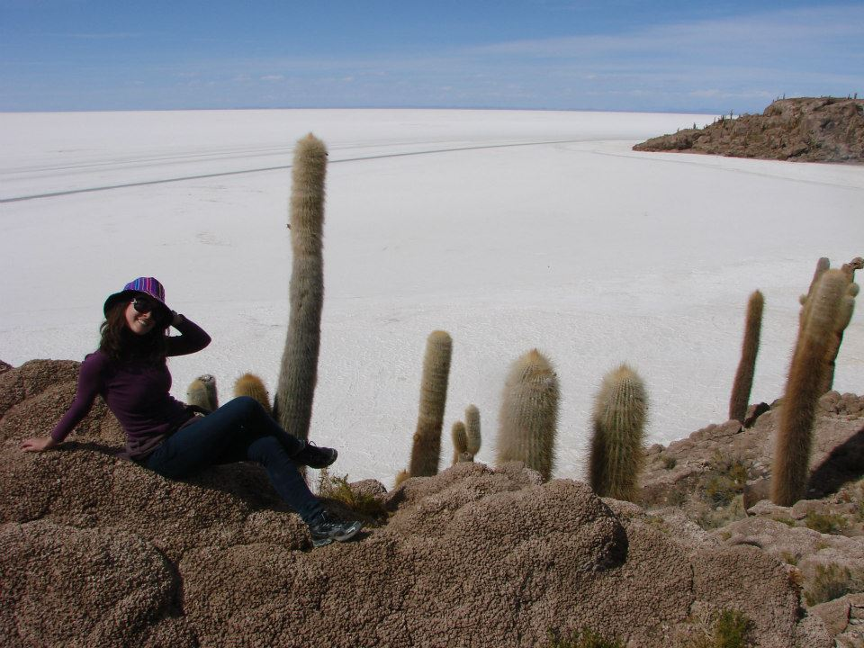 The impressive island with huge Cactuses
Most tours stop here because everybody wants to see the huge cacti which are much taller than people and not common at all. Also on this stop we saw a few viscachas - which look a bit like rabbits but are a type of cute Andean rodent, then we got to the oasis where people take the famous pictures in the immense white panorama where the reflection confuses perception. There are many courious salt formations that give it an "out-of-space" look to the place.
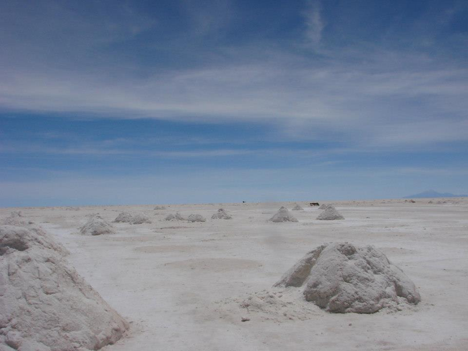 Where have we landed?Tired and happy we headed to the hotel. We slept in a salt hotel on the first night - yes, it is all made of salt! All meals during the day were prepared by the driver in the back of the car, typical delicious Andean food including vegetables and quinoa. At night we had a nice dinner in the hotel and tried flamingo meat (tastes a bit like dry chicken) and some wine - all included in the package booked.
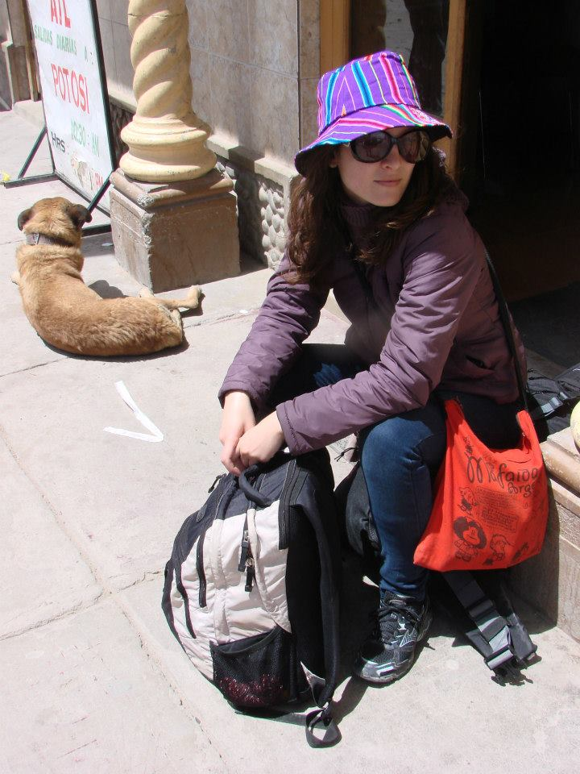 Waiting for the bus to UyuniOn the second day we had breakfast in the hotel and hopped on the Toyota ready for more adventures. The first stop was to see petrified volcanic lava and then we stopped at the first lagoon to see some Flamingos (alive this time, not on the plate — I prefer them like this by the way). The route is scenic and we made many stops for pictures. The wind was blowing very hard and cold but we couldn’t resist getting out of the car to capture on camera the unbelievable colours of the landscape and the volcanic rock formations.
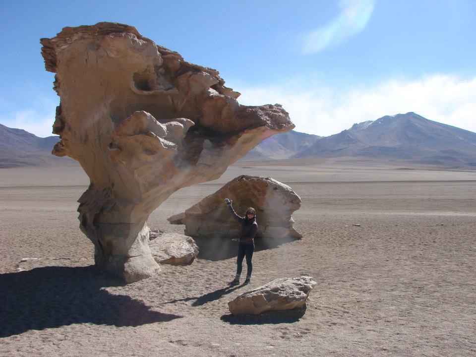 Me standing next to one of the impressive rock formations, El Arbol de Piedra, or the Tree of StoneThe body feels the altitude here - I was already used at this point because I spent some days in Potosi before that - but some people struggled with lack of air. Chewing coca leaves in this region is common and helps the symptoms of altitude, it is also harmless and does not give side effects (at least based on my experience). Laguna Colorado lies at an altitude of 4278 metres and has a red colouration thanks to some local algae and plankton. You also get to see more flamingos and other lakes before closing the day at the next hotel. We went to bed early because the next (and last) day was going to start before sunrise. But for a good reason: to see the geysers!
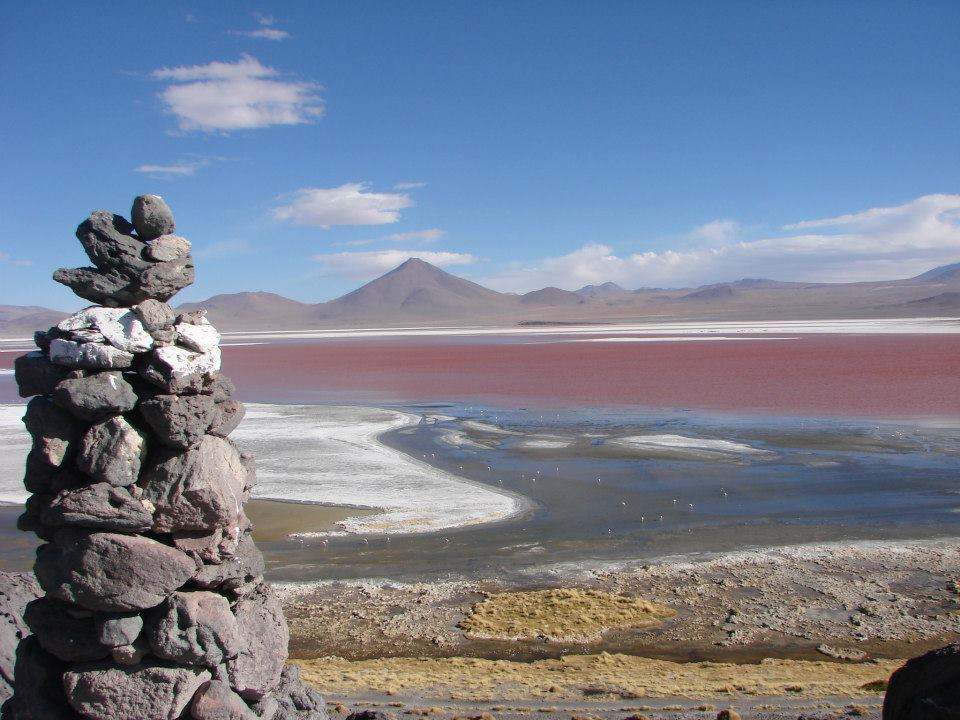 Laguna Colorada. The red color of the water comes from algae and planktonThe body feels the altitude here - I was already used at this point because I spent some days in Potosi before that - but some people struggled with lack of air. Chewing coca leaves in this region is common and helps the symptoms of altitude, it is also harmless and does not give side effects (at least based on my experience). Laguna Colorado lies at an altitude of 4278 metres and has a red colouration thanks to some local algae and plankton. You also get to see more flamingos and other lakes before closing the day at the next hotel. We went to bed early because the next (and last) day was going to start before sunrise. But for a good reason: to see the geysers!
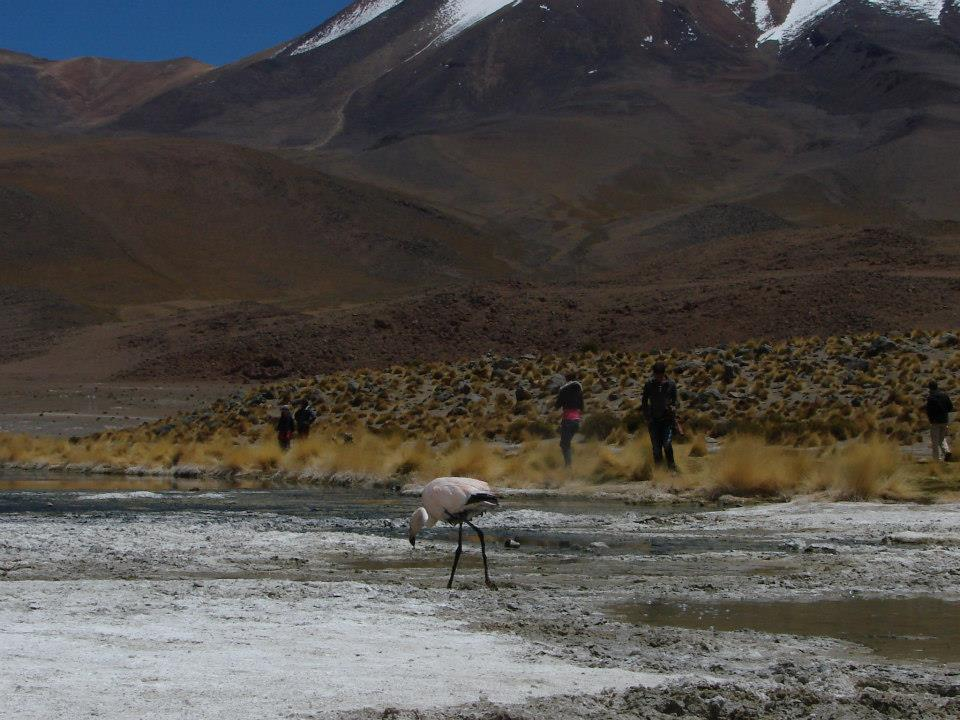 The Flamingos don't seem to mind the tourists, they let you get very closeI was very sleepy as we headed out the next day around 4h30 in the morning, but I woke up very fast with the sight of Laguna Verde. It is another beautiful lagoon with very green water (as you could guess by the name). After a short stop for pictures in the freezing cold there, we got to the biggest attraction of the day: the Geysers volcanic zone ‘Sol de Mañana’ (Morning Sun).
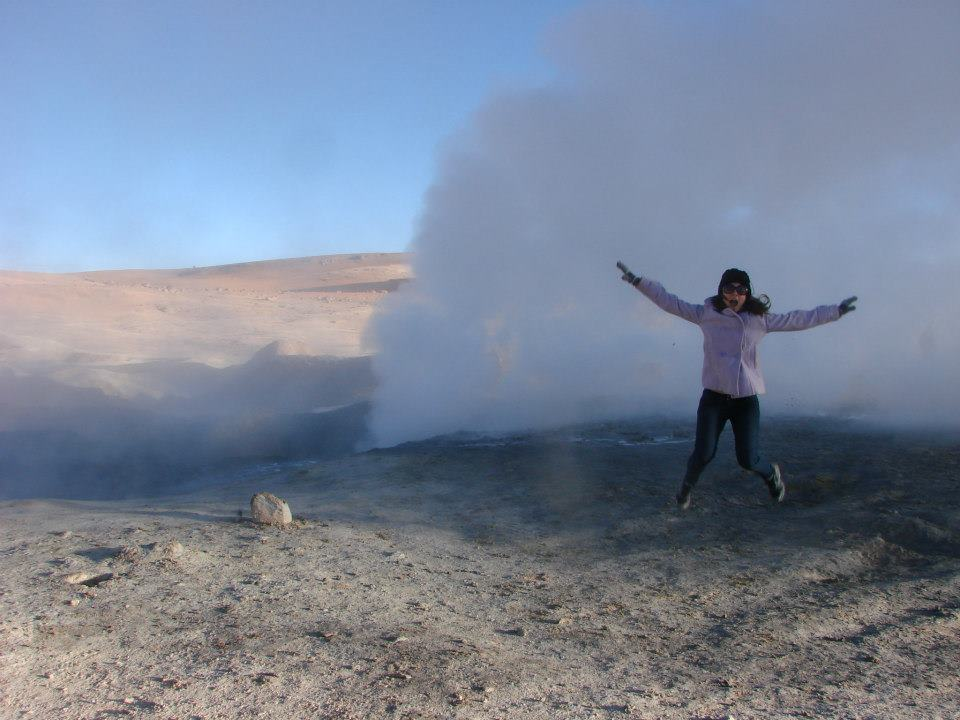 Even I found it worth it to wake up at 4 am to see thatI had never seen geysers in person before and confess I was like a child jumping and screaming. The aroma is strong, the temperature outside is cold and I remember the smoke being cold as well - probably because of the shock with the cold air. It is crazy to realise we are in a sight of such strong volcanic activity. Then there is a chance to relax in a hot natural thermal pool in the middle of nothing. This was the perfect ending to this 3-day adventure: to just sit and relax in the hot spring letting all the impressions of the last few days sink in.
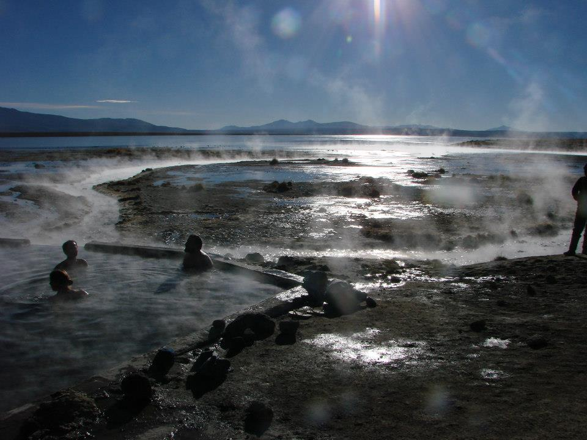 The perfect ending of my time in Bolivia: relaxing on a hot spring before heading to San Pedro de Atacama, in Chile